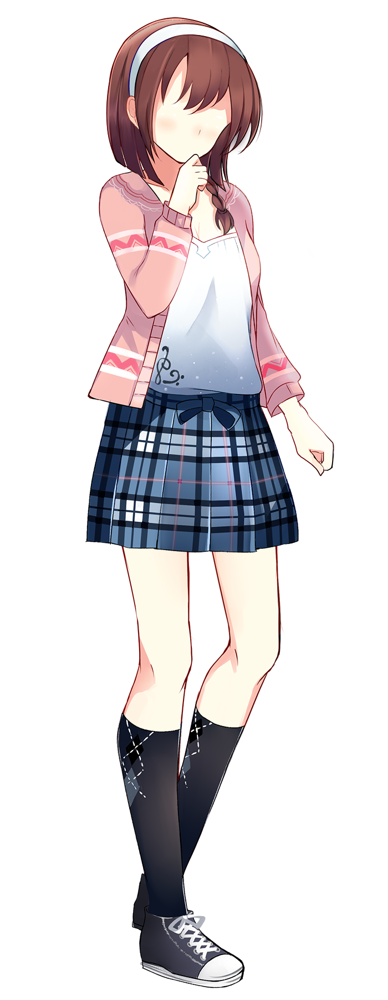
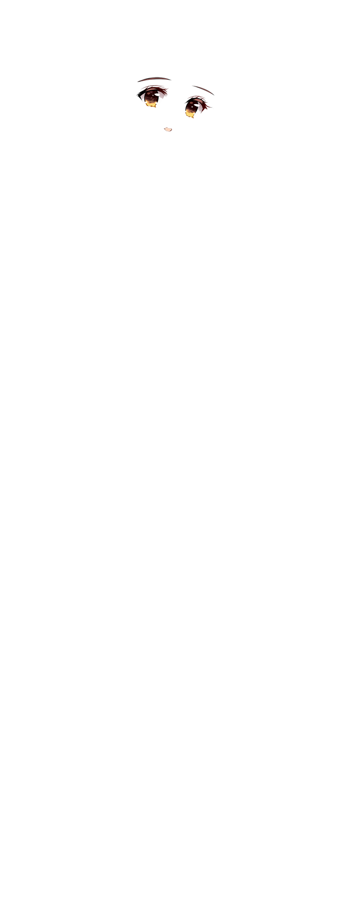
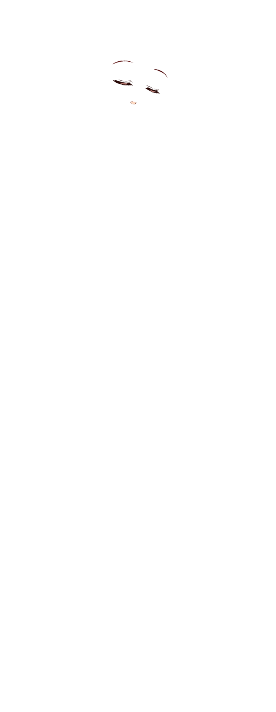
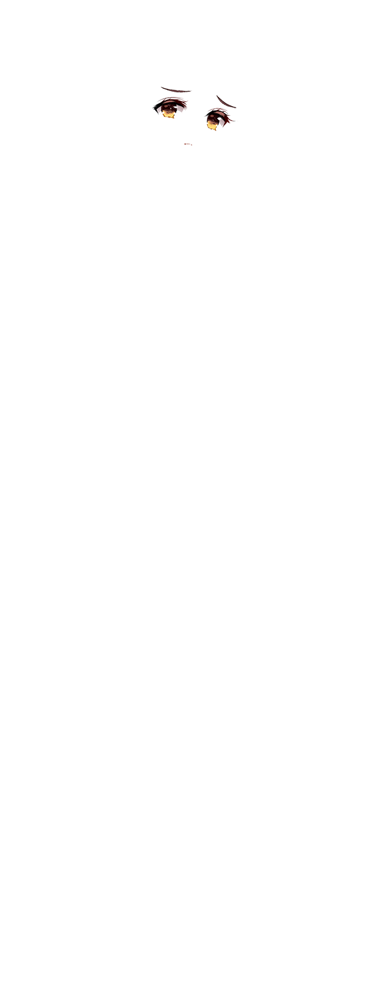

Seiko Nekomiya
- Seiko
- Sayaka
- Asako
- Miyame
Main Heroines
- Kat
- White Neko
Minor Characters
- Akihiro
- Kowayama
- Masaru
- Nagamichi
- Sato
Male Characters
- Allie
- Bubastis
- Mingita
Backer Exclusives
Character Info
Seiko is a sweet and hardworking girl. Everything about her is a picture of perfection until you see her grades. Polite and understanding, she serves as Sayaka's closest friend, and mediator between her and Yutei. Though she is earnest and understanding, she doesn't express much of her feelings and concerns.